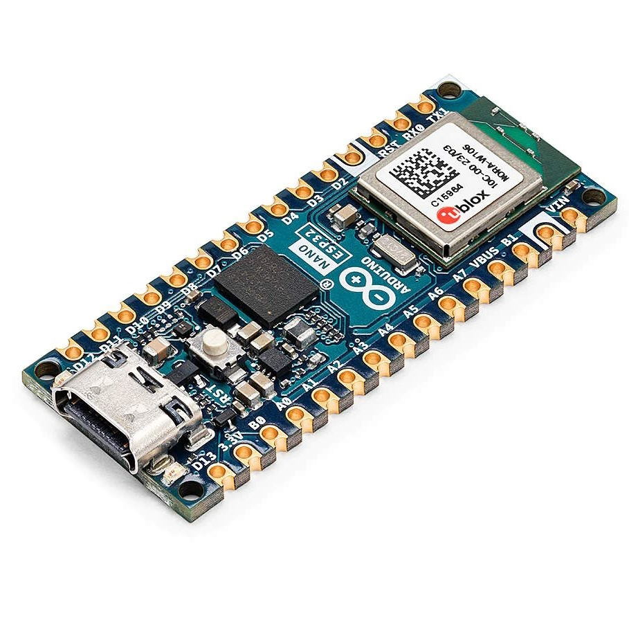

Плата основана на чипе ESP32 и работает на напряжении 3.3 вольта, на борту есть стабилизатор который позволяет питать плату от напряжений 6-21 вольт, так же можно питать от 5 вольт USB Type-C. Из минусов это малая доступность и большая цена около 17 долларов.
- Технические характеристики Arduino Nano ESP32:
- Беспроводной модуль – u-Blox NORA-W106-10B с
MCU — двухъядерный микроконтроллер ESP32-S3 Xtensa LX7 @ до 240 МГц с векторными расширениями, 512 КБ SRAM, 384 КБ ROM, подключение WiFi 4 и Bluetooth 5.0
- Память — 8 МБ PSRAM
- Встроенная PCB антенна
- Хранилище — 16 МБ флэш-памяти
- USB — 1х порт USB Type-C для питания и программирования
- Ввод/вывод 2x 15-контактных разъема расширения с 14x GPIO, 13x светодиодными контактами, 5x PWM, 8x аналоговыми входами, 2x UART, 1x I2C, 1x SPI, сброс и сигналы питания (+5 В, +3,3 В, GND, Vin, AREF, … )
3.3 В I/O (не допускается 5 В)
- Исходный ток на контакт ввода/вывода – 40 мА
- Потребляемый ток на контакт ввода/вывода – 28 мА
- Разное — кнопка сброса и 2х светодиода
- Источник питания 5В через USB и 6-21 В через контакт Vin на разъемах
- Размеры — 45 x 18 мм, совместимые с оригинальным Arduino Nano